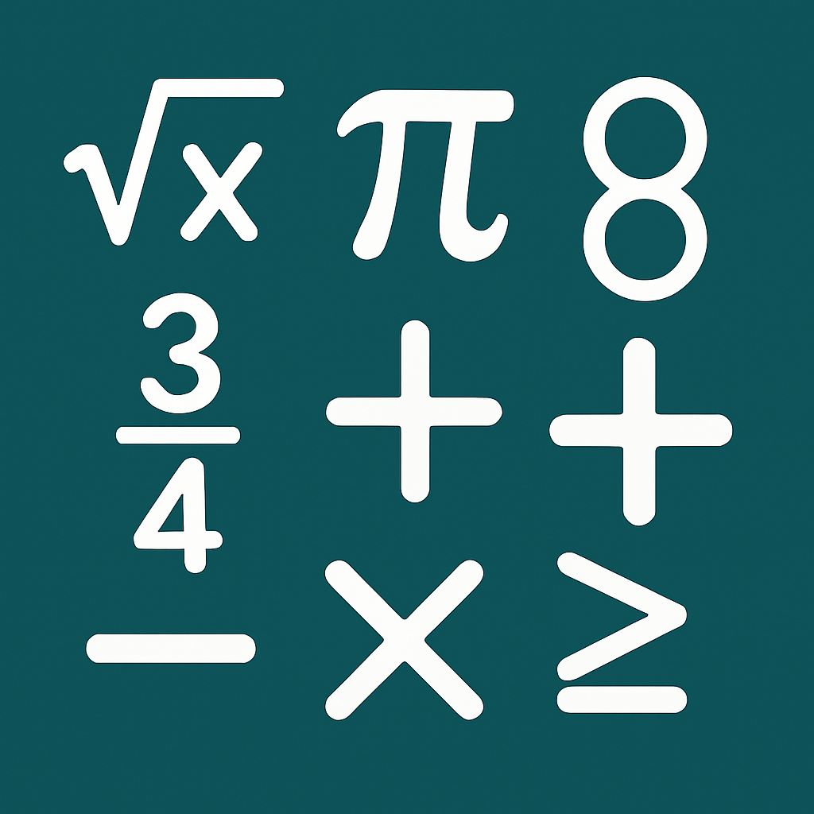

Conjunto de conhecimentos, técnicas e ferramentas que são usados para criar produtos, serviços e sistemas que atendam às necessidades humanas.

Ciência que estuda objetos abstratos (números, figuras, funções) e as relações existentes entre eles.
Os jogos constantes deste site estão de acordo com a competência 3 - Investigação e Comunicação com TDIB, competência 5 - Uso crítico e criativo das tecnogias
Ciências e Matemática - Resolução de Problemas com Programação e Habilidade EM13MAT405 - Uso de Algoritmos